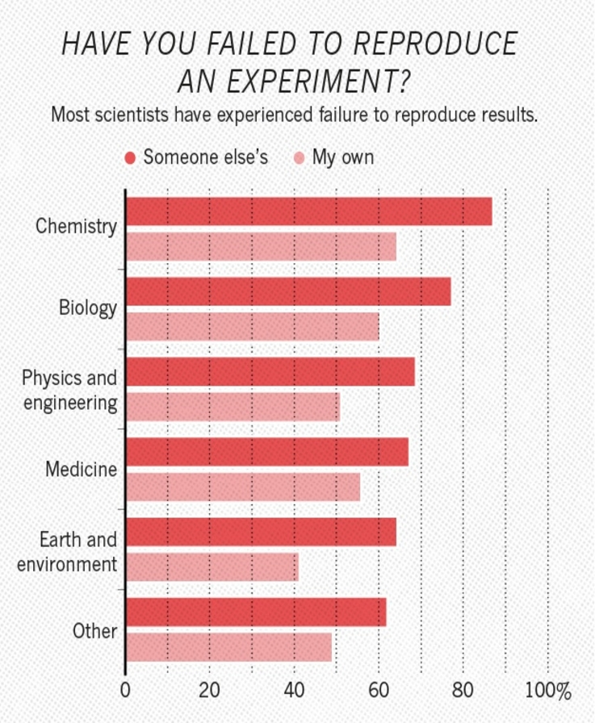
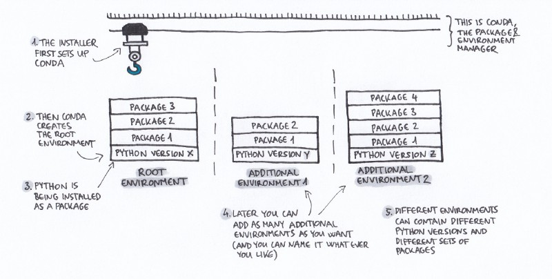

Tools for Reproducible Research
Alex Coleman
Research Computing
17th March 2021
Get the slides
https://bit.ly/RC-LIDA20
Got a question?
Please pop questions in the chat as you think of them. I’ll either take them at the end or if I find a good moment to respond.
Who are Research Computing?
The Research Computing Team are a collection of research software engineers and data analysts spread across LIDA and IT including:
- Mark Conmy
- Martin Callaghan
- John Hodrien
- Ollie Clark
- Adam Keeley
- Sean Tuck
- Phil Chambers
- Nick Rhodes
- Alex Coleman
- Samantha Crossfield
Motivations

What’s all the fuss about?


Agenda
Today we’re going to touch on ways to make our code reproducible.
- Basics - version control and project management
- Conda - to record environments and manage packages
- Virtual Machines - using vagrant to script virtual machine configuration
- Containers - a small, portable approach to sharing environments
- Workflow tools - e.g. Snakemake, Luigi
- Notebooks - The computational scientists lab book
Basic building blocks
The basic building blocks of a good, reproducible project are:
- version control e.g. git
- Simple project management structure
Version control
Version control or source control systems are means by which we can track changes in our code.
- It keeps a clear and accountable linear timeline of changes
- Very useful when coding in a team
- Prevents folders filling up with
draft1.txt draft1.2.txt draft.1.2.3.txt - We encourage people to use
git
Project management
Keeping all files relating to a project in a single folder is a good starting point.
project_name/
├── README.md # overview of the project
├── data/ # data files used in the project
│ ├── README.md # describes where data came from
│ └── sub-folder/ # may contain subdirectories
├── processed_data/ # intermediate files from the analysis
├── manuscript/ # manuscript describing the results
├── results/ # results of the analysis (data, tables, figures)
├── src/ # contains all code in the project
│ ├── LICENSE # license for your code
│ ├── requirements.txt # software requirements and dependencies
│ └── ...
└── doc/ # documentation for your project
├── index.rst
└── ...Conda
The code we write often depends on other code. Tools such as conda try to help isolate specific dependencies:
- Install packages with specific versions
- Record those versions
- Isolate environments with distinct packages
- Using different R/Python versions per project
- Provides tools for sharing environments and packages
Conda illustrated

Virtual machines and Vagrant
- Virtual machines allow us to run an alternate operating system on our host machine.
- They require some set up, but can be super useful
- Vagrant is a tool that can help!
Vagrantfile
- We write a Vagrant recipe file that allows anyone to replicate the exact operating system environment used to run your code
Vagrant.configure("2") do |config|
config.vm.box = "hashicorp/bionic64"
end
- We did a TechTalk earlier this year that showcases Vagrant with examples
Containers


What are containers?
- Containers let you bundle up all the ingredients into a single package that you can run
- This means you don’t need a virtual machine and makes them very portable
- They have drawbacks but can be a powerful tool for sharing code/results
Workflow tools
Capturing our workflow takes many forms
Just remembering where we clicked

Use Bash or GNU Make

Use workflow tools like Snakemake/Luigi
Snakemake and Luigi are workflow managers
Snakemake concepts
- Snakemake is easy to learn
- Available on all platforms and HPC compatible🎉
- Workflows can scale from laptop to cluster
Notebooks


Jupyter

Jupyter
- JupyterLab is an interactive development environment
- It lets you code, write notes, include graphics
- You can run it in Python, R, Julia and many others
Reproducify your notebooks
- BinderHub, is a service that lets you run your notebooks on the web
- Google colab, a google service that provides a notebook like environment for writing code and easy access to GPUs
- Jupyter Book, a package that can turn your notebooks into pdfs or interactive books
Thank you
Keep in touch
Thanks for listening and I hope you’ve found this talk interesting!
Research Computing is here to help with all this so get in touch via- Send us a question: https://bit.ly/arc-help
- Email: ask-rc@leeds.ac.uk
- Reach out to us via Teams
- Link to the GitHub repo for these slides
A potted further reading list
Talks
- Gabriel Becker’s An Imperfect Guide to Imperfect Reproducibility
- Tania Allard’s slide deck on Jupyter notebooks: Friends or Foes?
- Making your code citable from GitHub